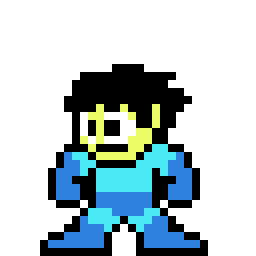
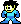

<html></html><head><style>.wat {
  color: red;
}
.crisp {
  image-rendering: pixelated;
}
.row {
  align-items: center;
  display: flex;
}
#canvas {
  position: absolute;
  transform-origin: 0, 0;
}
.canvas-container {
  position: relative;
  margin: 30px 40px;
  display: flex;
}
.precoded {
  font-family: monospace;
  font-size: 10px;
  letter-spacing: 0.25em;
  line-height: 0.78em;
  background: #777;
}
</style><script>const $ = document.querySelector.bind(document);
const $$ = document.querySelectorAll.bind(document);</script></head><body><div class="wat">Hello Megamans</div><br/><br/><div class="row"><div class="canvas-container"><canvas class="crisp" id="canvas"></canvas></div><div class="precoded"></div></div><script>const ctx = canvas.getContext("2d");

var myGif;
let _foo, _bar, _baz;

const gifURL = "megaman2.gif";
const $sizeTemplate = $('#template');
let _output;

$sizeTemplate.onload = () => {
    myGif = GIF(); // placeholder gif until done loading
    myGif.load(gifURL)
      .then(gif => {
        renderAnimated(gif, $sizeTemplate); // hmm, maybe get rid of template param
        const [combinedArray, colorMap] = generateCombinedArray(gif);
        renderCombinedArray(combinedArray, colorMap, gif.width, $('.precoded'));


        _output = combinedArray;
      })
      .catch(err => console.error("Gif loading error: " + err));
}

// Function draws an image
function drawImage(image,x,y,scale,rot){
    ctx.imageSmoothingEnabled = false;
    ctx.setTransform(scale,0,0,scale,x,y);
    ctx.rotate(rot);
    ctx.drawImage(image,-image.width / 2, -image.height / 2);
}

function renderAnimated(myGif, $template) { // size template
  //- $template.onload = () => {
    const { width: tWidth, height: tHeight } = $template.getBoundingClientRect();
    const { naturalWidth, naturalHeight } = $template;
    Object.assign($('.canvas-container').style, {
      width: tWidth,
      height: tHeight,
    });

    var w = naturalWidth;// tWidth;
    var h = naturalHeight;// tHeight;
    var cw = w / 2; // center
    var ch = h / 2;

    canvas.width = w;
    canvas.height = h;
    canvas.style.transformOrigin = '0 0';
    canvas.style.transform = `scale(${tWidth/naturalWidth})`;

    // main update function
    function update(timer) {
      ctx.setTransform(1, 0, 0, 1, 0, 0); // reset transform
      ctx.clearRect(0, 0, w, h);
      if (myGif && !myGif.loading) {
        drawImage(myGif.image, cw, ch, 1, 0); // displays the current frame.
      }
      requestAnimationFrame(update);
    }
    update();
  //- };
}

function generateCombinedArray(gif) {
  // Only takes two frames.
  const EMPTY = '#00000000';

  const { width, height } = gif;
  const colorRegistry = {};
  const sortedColorRegistry = {}; // abusing order, down below
  const first = gif.frames[0].image.ctx.getImageData(0, 0, width, height).data;
  const second = gif.frames[1].image.ctx.getImageData(0, 0, width, height).data;
  const output = Array(first.length/4);
  let blargh = 0;
  let keyOne, keyTwo, key;
  const getColor = (n, i) => n.slice(i, i+4).reduce((a, n) => a+n.toString(16).padStart(2,'0'),'#');
  for (let i = 0; i < first.length-3; i += 4) {
    keyOne = getColor(first, i);
    keyTwo = getColor(second, i);
    key = keyOne === keyTwo ?
        keyOne :
          keyOne === EMPTY ?
            EMPTY + '_in' : // will be 1, black pixel ENTERING
            EMPTY + '_out'; // will be 2, black pixel EXITING
    colorRegistry[key] = colorRegistry[key] === undefined ? 0 : colorRegistry[key]+1;
    output[i/4] = key;
    blargh++;
  }
  Object.keys(colorRegistry).sort().forEach((n, i) => sortedColorRegistry[n] = i);

  // Go back over the output array and re-assign values:
  for (let i = 0; i < output.length; i++) {
    output[i] = sortedColorRegistry[output[i]];
  }

  const numsToColors = {};
  Object.keys(sortedColorRegistry).forEach((n, i) => numsToColors[i] = n);
  return [output, numsToColors];
}

function renderCombinedArray(array, colorMap, width, $el) {
  const NBSP = String.fromCharCode(160);

  let stringToRender = '';
  for (let i = 0; i < array.length; i++) {
    stringToRender += colorize(array[i]);
    if ((i+1)%width === 0) stringToRender += '<br>';
  }
  $el.innerHTML = stringToRender;

  function colorize(n) {
    const color = colorMap[n];
    n = n ? n : NBSP;
    return `<span style="color: ${color}">${n}</span>`;
  }
}

function stringEncode(nums) {
  return nums.map(n => String.fromCharCode(n)).join('');
  //- return nums.map(n => )
}
function stringDecode(string) {
  const output = Array(string.length);
  for (i = 0; i < string.length; i++) {
    output[i] = string.charCodeAt(i);
  }
  return output;
}


function bitEncode(nums, bits, basis) {
 const length = nums.length;
 const bitArrayLength = length*bits;
 const bitArray = Array(bitArrayLength);
 for (let i = 0; i < length; i++) {
    const chunk = (nums[i] >>> 0).toString(2).padStart(bits, '0').split('');
    for (let j = 0; j < bits; j++) {
        bitArray[i*bits+j] = chunk[j];
    }
 }
 const byte = Array(basis).fill(0);
 let output = [];
 for (let i = 0; i <= bitArrayLength; i++) {
    if (i && i%basis === 0) {
       output[i/basis-1] = parseInt(byte.join(''),2);
    } else if (i === bitArrayLength) { // only triggers on a remainder
       output[Math.ceil(i/basis-1)] = parseInt(byte.join(''), 2);
    }
    byte[i%basis] = bitArray[i];
 }
 output.push(bits, basis, nums.length);
 return output;
}

function bitDecode(nums) {
    const len = nums.pop();
    const basis = nums.pop();
    const bits = nums.pop();
    const length = nums.length;

    const bitArrayLength = length*basis;
    const bitArray = Array(bitArrayLength);
    for (let i = 0; i < length; i++) {
        const byte = (nums[i] >>> 0).toString(2).padStart(basis, '0').split('');
        for (let j = 0; j < basis; j++) {
            bitArray[i*basis+j] = byte[j];
        }
    }
    const chunk = Array(bits);
    const sigArrayLength = bits*len; // bitArrayLength minus remainder; do mathematically?
    let output = [];
    for (let i = 0; i <= sigArrayLength; i++) {
        if (i && i%bits === 0) {
            output[i/bits-1] = parseInt(chunk.join(''), 2);
        }
        chunk[i%bits] = bitArray[i];
    }
    return output;
}

/*============================================================================
  Gif Decoder and player for use with Canvas API's

**NOT** for commercial use.

To use

    var myGif = GIF();                  // creates a new gif
    var myGif = new GIF();              // will work as well but not needed as GIF() returns the correct reference already.
    myGif.load("myGif.gif");            // set URL and load
    myGif.onload = function(event){     // fires when loading is complete
                                        //event.type   = "load"
                                        //event.path   array containing a reference to the gif
    }
    myGif.onprogress = function(event){ // Note this function is not bound to myGif
                                        //event.bytesRead    bytes decoded
                                        //event.totalBytes   total bytes
                                        //event.frame        index of last frame decoded
    }
    myGif.onerror = function(event){    // fires if there is a problem loading. this = myGif
                                        //event.type   a description of the error
                                        //event.path   array containing a reference to the gif
    }

Once loaded the gif can be displayed
    if(!myGif.loading){
        ctx.drawImage(myGif.image,0,0);
    }
You can display the last frame loaded during loading

    if(myGif.lastFrame !== null){
        ctx.drawImage(myGif.lastFrame.image,0,0);
    }


To access all the frames
    var gifFrames = myGif.frames; // an array of frames.

A frame holds various frame associated items.
    myGif.frame[0].image; // the first frames image
    myGif.frame[0].delay; // time in milliseconds frame is displayed for


Gifs use various methods to reduce the file size. The loaded frames do not maintain the optimisations and hold the full resolution frames as DOM images. This mean the memory footprint of a decode gif will be many time larger than the Gif file.
 */
function GIF() {
    let _done, _failed;
    const loadPromise = new Promise((r, j) => { _done = r; _failed = j });
    // **NOT** for commercial use.
    var timerID;                          // timer handle for set time out usage
    var st;                               // holds the stream object when loading.
    var interlaceOffsets  = [0, 4, 2, 1]; // used in de-interlacing.
    var interlaceSteps    = [8, 8, 4, 2];
    var interlacedBufSize;  // this holds a buffer to de interlace. Created on the first frame and when size changed
    var deinterlaceBuf;
    var pixelBufSize;    // this holds a buffer for pixels. Created on the first frame and when size changed
    var pixelBuf;
    const GIF_FILE = { // gif file data headers
        GCExt   : 0xF9,
        COMMENT : 0xFE,
        APPExt  : 0xFF,
        UNKNOWN : 0x01, // not sure what this is but need to skip it in parser
        IMAGE   : 0x2C,
        EOF     : 59,   // This is entered as decimal
        EXT     : 0x21,
    };
    // simple buffered stream used to read from the file
    var Stream = function (data) {
        this.data = new Uint8ClampedArray(data);
        this.pos  = 0;
        var len   = this.data.length;
        this.getString = function (count) { // returns a string from current pos of len count
            var s = "";
            while (count--) { s += String.fromCharCode(this.data[this.pos++]) }
            return s;
        };
        this.readSubBlocks = function () { // reads a set of blocks as a string
            var size, count, data  = "";
            do {
                count = size = this.data[this.pos++];
                while (count--) { data += String.fromCharCode(this.data[this.pos++]) }
            } while (size !== 0 && this.pos < len);
            return data;
        }
        this.readSubBlocksB = function () { // reads a set of blocks as binary
            var size, count, data = [];
            do {
                count = size = this.data[this.pos++];
                while (count--) { data.push(this.data[this.pos++]);}
            } while (size !== 0 && this.pos < len);
            return data;
        }
    };
    // LZW decoder uncompressed each frames pixels
    // this needs to be optimised.
    // minSize is the min dictionary as powers of two
    // size and data is the compressed pixels
    function lzwDecode(minSize, data) {
        var i, pixelPos, pos, clear, eod, size, done, dic, code, last, d, len;
        pos = pixelPos = 0;
        dic      = [];
        clear    = 1 << minSize;
        eod      = clear + 1;
        size     = minSize + 1;
        done     = false;
        while (!done) { // JavaScript optimisers like a clear exit though I never use 'done' apart from fooling the optimiser
            last = code;
            code = 0;
            for (i = 0; i < size; i++) {
                if (data[pos >> 3] & (1 << (pos & 7))) { code |= 1 << i }
                pos++;
            }
            if (code === clear) { // clear and reset the dictionary
                dic = [];
                size = minSize + 1;
                for (i = 0; i < clear; i++) { dic[i] = [i] }
                dic[clear] = [];
                dic[eod] = null;
            } else {
                if (code === eod) {  done = true; return }
                if (code >= dic.length) { dic.push(dic[last].concat(dic[last][0])) }
                else if (last !== clear) { dic.push(dic[last].concat(dic[code][0])) }
                d = dic[code];
                len = d.length;
                for (i = 0; i < len; i++) { pixelBuf[pixelPos++] = d[i] }
                if (dic.length === (1 << size) && size < 12) { size++ }
            }
        }
    };
    function parseColourTable(count) { // get a colour table of length count  Each entry is 3 bytes, for RGB.
        var colours = [];
        for (var i = 0; i < count; i++) { colours.push([st.data[st.pos++], st.data[st.pos++], st.data[st.pos++]]) }
        return colours;
    }
    function parse (){        // read the header. This is the starting point of the decode and async calls parseBlock
        var bitField;
        st.pos                += 6;
        gif.width             = (st.data[st.pos++]) + ((st.data[st.pos++]) << 8);
        gif.height            = (st.data[st.pos++]) + ((st.data[st.pos++]) << 8);
        bitField              = st.data[st.pos++];
        gif.colorRes          = (bitField & 0b1110000) >> 4;
        gif.globalColourCount = 1 << ((bitField & 0b111) + 1);
        gif.bgColourIndex     = st.data[st.pos++];
        st.pos++;                    // ignoring pixel aspect ratio. if not 0, aspectRatio = (pixelAspectRatio + 15) / 64
        if (bitField & 0b10000000) { gif.globalColourTable = parseColourTable(gif.globalColourCount) } // global colour flag
        setTimeout(parseBlock, 0);
    }
    function parseAppExt() { // get application specific data. Netscape added iterations and terminator. Ignoring that
        st.pos += 1;
        if ('NETSCAPE' === st.getString(8)) { st.pos += 8 }  // ignoring this data. iterations (word) and terminator (byte)
        else {
            st.pos += 3;            // 3 bytes of string usually "2.0" when identifier is NETSCAPE
            st.readSubBlocks();     // unknown app extension
        }
    };
    function parseGCExt() { // get GC data
        var bitField;
        st.pos++;
        bitField              = st.data[st.pos++];
        gif.disposalMethod    = (bitField & 0b11100) >> 2;
        gif.transparencyGiven = bitField & 0b1 ? true : false; // ignoring bit two that is marked as  userInput???
        gif.delayTime         = (st.data[st.pos++]) + ((st.data[st.pos++]) << 8);
        gif.transparencyIndex = st.data[st.pos++];
        st.pos++;
    };
    function parseImg() {                           // decodes image data to create the indexed pixel image
        var deinterlace, frame, bitField;
        deinterlace = function (width) {                   // de interlace pixel data if needed
            var lines, fromLine, pass, toline;
            lines = pixelBufSize / width;
            fromLine = 0;
            if (interlacedBufSize !== pixelBufSize) {      // create the buffer if size changed or undefined.
                deinterlaceBuf = new Uint8Array(pixelBufSize);
                interlacedBufSize = pixelBufSize;
            }
            for (pass = 0; pass < 4; pass++) {
                for (toLine = interlaceOffsets[pass]; toLine < lines; toLine += interlaceSteps[pass]) {
                    deinterlaceBuf.set(pixelBuf.subarray(fromLine, fromLine + width), toLine * width);
                    fromLine += width;
                }
            }
        };
        frame                = {}
        gif.frames.push(frame);
        frame.disposalMethod = gif.disposalMethod;
        frame.time           = gif.length;
        frame.delay          = gif.delayTime * 10;
        gif.length          += frame.delay;
        if (gif.transparencyGiven) { frame.transparencyIndex = gif.transparencyIndex }
        else { frame.transparencyIndex = undefined }
        frame.leftPos = (st.data[st.pos++]) + ((st.data[st.pos++]) << 8);
        frame.topPos  = (st.data[st.pos++]) + ((st.data[st.pos++]) << 8);
        frame.width   = (st.data[st.pos++]) + ((st.data[st.pos++]) << 8);
        frame.height  = (st.data[st.pos++]) + ((st.data[st.pos++]) << 8);
        bitField      = st.data[st.pos++];
        frame.localColourTableFlag = bitField & 0b10000000 ? true : false;
        if (frame.localColourTableFlag) { frame.localColourTable = parseColourTable(1 << ((bitField & 0b111) + 1)) }
        if (pixelBufSize !== frame.width * frame.height) { // create a pixel buffer if not yet created or if current frame size is different from previous
            pixelBuf     = new Uint8Array(frame.width * frame.height);
            pixelBufSize = frame.width * frame.height;
        }
        lzwDecode(st.data[st.pos++], st.readSubBlocksB()); // decode the pixels
        if (bitField & 0b1000000) {                        // de interlace if needed
            frame.interlaced = true;
            deinterlace(frame.width);
        } else { frame.interlaced = false }
        processFrame(frame);                               // convert to canvas image
    };
    function processFrame(frame) { // creates a RGBA canvas image from the indexed pixel data.
        var ct, cData, dat, pixCount, ind, useT, i, pixel, pDat, col, frame, ti;
        frame.image        = document.createElement('canvas');
        frame.image.width  = gif.width;
        frame.image.height = gif.height;
        frame.image.ctx    = frame.image.getContext("2d");
        ct = frame.localColourTableFlag ? frame.localColourTable : gif.globalColourTable;
        if (gif.lastFrame === null) { gif.lastFrame = frame }
        useT = (gif.lastFrame.disposalMethod === 2 || gif.lastFrame.disposalMethod === 3) ? true : false;
        if (!useT) { frame.image.ctx.drawImage(gif.lastFrame.image, 0, 0, gif.width, gif.height) }
        cData = frame.image.ctx.getImageData(frame.leftPos, frame.topPos, frame.width, frame.height);
        ti  = frame.transparencyIndex;
        dat = cData.data;
        if (frame.interlaced) { pDat = deinterlaceBuf }
        else { pDat = pixelBuf }
        pixCount = pDat.length;
        ind = 0;
        for (i = 0; i < pixCount; i++) {
            pixel = pDat[i];
            col   = ct[pixel];
            if (ti !== pixel) {
                dat[ind++] = col[0];
                dat[ind++] = col[1];
                dat[ind++] = col[2];
                dat[ind++] = 255;      // Opaque.
            } else
                if (useT) {
                    dat[ind + 3] = 0; // Transparent.
                    ind += 4;
                } else { ind += 4 }
        }
        frame.image.ctx.putImageData(cData, frame.leftPos, frame.topPos);
        gif.lastFrame = frame;
        if (!gif.waitTillDone && typeof gif.onload === "function") { doOnloadEvent() }// if !waitTillDone the call onload now after first frame is loaded
    };
    // **NOT** for commercial use.
    function finished() { // called when the load has completed
        gif.loading           = false;
        gif.frameCount        = gif.frames.length;
        gif.lastFrame         = null;
        st                    = undefined;
        gif.complete          = true;
        gif.disposalMethod    = undefined;
        gif.transparencyGiven = undefined;
        gif.delayTime         = undefined;
        gif.transparencyIndex = undefined;
        gif.waitTillDone      = undefined;
        pixelBuf              = undefined; // dereference pixel buffer
        deinterlaceBuf        = undefined; // dereference interlace buff (may or may not be used);
        pixelBufSize          = undefined;
        deinterlaceBuf        = undefined;
        gif.currentFrame      = 0;
        if (gif.frames.length > 0) { gif.image = gif.frames[0].image }
        doOnloadEvent();
        if (typeof gif.onloadall === "function") {
            (gif.onloadall.bind(gif))({   type : 'loadall', path : [gif] });
        }
        if (gif.playOnLoad) { gif.play() }
        _done(gif);
    }
    function canceled () { // called if the load has been cancelled
        finished();
        if (typeof gif.cancelCallback === "function") { (gif.cancelCallback.bind(gif))({ type : 'canceled', path : [gif] }) }
    }
    function parseExt() {              // parse extended blocks
        const blockID = st.data[st.pos++];
        if(blockID === GIF_FILE.GCExt) { parseGCExt() }
        else if(blockID === GIF_FILE.COMMENT) { gif.comment += st.readSubBlocks() }
        else if(blockID === GIF_FILE.APPExt) { parseAppExt() }
        else {
            if(blockID === GIF_FILE.UNKNOWN) { st.pos += 13; } // skip unknow block
            st.readSubBlocks();
        }

    }
    function parseBlock() { // parsing the blocks
        if (gif.cancel !== undefined && gif.cancel === true) { canceled(); return }

        const blockId = st.data[st.pos++];
        if(blockId === GIF_FILE.IMAGE ){ // image block
            parseImg();
            if (gif.firstFrameOnly) { finished(); return }
        }else if(blockId === GIF_FILE.EOF) { finished(); return }
        else { parseExt() }
        if (typeof gif.onprogress === "function") {
            gif.onprogress({ bytesRead  : st.pos, totalBytes : st.data.length, frame : gif.frames.length });
        }
        setTimeout(parseBlock, 0); // parsing frame async so processes can get some time in.
    };
    function cancelLoad(callback) { // cancels the loading. This will cancel the load before the next frame is decoded
        if (gif.complete) { return false }
        gif.cancelCallback = callback;
        gif.cancel         = true;
        return true;
    }
    function error(type) {
        if (typeof gif.onerror === "function") { (gif.onerror.bind(this))({ type : type, path : [this] }) }
        gif.onload  = gif.onerror = undefined;
        gif.loading = false;
        _failed(type);
    }
    function doOnloadEvent() { // fire onload event if set
        gif.currentFrame = 0;
        gif.nextFrameAt  = gif.lastFrameAt  = new Date().valueOf(); // just sets the time now
        if (typeof gif.onload === "function") { (gif.onload.bind(gif))({ type : 'load', path : [gif] }) }
        gif.onerror = gif.onload  = undefined;
    }
    function dataLoaded(data) { // Data loaded create stream and parse
        st = new Stream(data);
        parse();
    }
    function loadGif(filename) { // starts the load
        var ajax = new XMLHttpRequest();
        ajax.responseType = "arraybuffer";
        ajax.onload = function (e) {
            if (e.target.status === 404) { error("File not found") }
            else if(e.target.status >= 200 && e.target.status < 300 ) { dataLoaded(ajax.response) }
            else { error("Loading error : " + e.target.status) }
        };
        ajax.open('GET', filename, true);
        ajax.send();
        ajax.onerror = function (e) { error("File error") };
        this.src = filename;
        this.loading = true;
        return loadPromise;
    }
    function play() { // starts play if paused
        if (!gif.playing) {
            gif.paused  = false;
            gif.playing = true;
            playing();
        }
    }
    function pause() { // stops play
        gif.paused  = true;
        gif.playing = false;
        clearTimeout(timerID);
    }
    function togglePlay(){
        if(gif.paused || !gif.playing){ gif.play() }
        else{ gif.pause() }
    }
    function seekFrame(frame) { // seeks to frame number.
        clearTimeout(timerID);
        gif.currentFrame = frame % gif.frames.length;
        if (gif.playing) { playing() }
        else { gif.image = gif.frames[gif.currentFrame].image }
    }
    function seek(time) { // time in Seconds  // seek to frame that would be displayed at time
        clearTimeout(timerID);
        if (time < 0) { time = 0 }
        time *= 1000; // in ms
        time %= gif.length;
        var frame = 0;
        while (time > gif.frames[frame].time + gif.frames[frame].delay && frame < gif.frames.length) {  frame += 1 }
        gif.currentFrame = frame;
        if (gif.playing) { playing() }
        else { gif.image = gif.frames[gif.currentFrame].image}
    }
    function playing() {
        var delay;
        var frame;
        if (gif.playSpeed === 0) {
            gif.pause();
            return;
        } else {
            if (gif.playSpeed < 0) {
                gif.currentFrame -= 1;
                if (gif.currentFrame < 0) {gif.currentFrame = gif.frames.length - 1 }
                frame = gif.currentFrame;
                frame -= 1;
                if (frame < 0) {  frame = gif.frames.length - 1 }
                delay = -gif.frames[frame].delay * 1 / gif.playSpeed;
            } else {
                gif.currentFrame += 1;
                gif.currentFrame %= gif.frames.length;
                delay = gif.frames[gif.currentFrame].delay * 1 / gif.playSpeed;
            }
            gif.image = gif.frames[gif.currentFrame].image;
            timerID = setTimeout(playing, delay);
        }
    }
    var gif = {                      // the gif image object
        onload         : null,       // fire on load. Use waitTillDone = true to have load fire at end or false to fire on first frame
        onerror        : null,       // fires on error
        onprogress     : null,       // fires a load progress event
        onloadall      : null,       // event fires when all frames have loaded and gif is ready
        paused         : false,      // true if paused
        playing        : false,      // true if playing
        waitTillDone   : true,       // If true onload will fire when all frames loaded, if false, onload will fire when first frame has loaded
        loading        : false,      // true if still loading
        firstFrameOnly : false,      // if true only load the first frame
        width          : null,       // width in pixels
        height         : null,       // height in pixels
        frames         : [],         // array of frames
        comment        : "",         // comments if found in file. Note I remember that some gifs have comments per frame if so this will be all comment concatenated
        length         : 0,          // gif length in ms (1/1000 second)
        currentFrame   : 0,          // current frame.
        frameCount     : 0,          // number of frames
        playSpeed      : 1,          // play speed 1 normal, 2 twice 0.5 half, -1 reverse etc...
        lastFrame      : null,       // temp hold last frame loaded so you can display the gif as it loads
        image          : null,       // the current image at the currentFrame
        playOnLoad     : true,       // if true starts playback when loaded
        // functions
        load           : loadGif,    // call this to load a file
        cancel         : cancelLoad, // call to stop loading
        play           : play,       // call to start play
        pause          : pause,      // call to pause
        seek           : seek,       // call to seek to time
        seekFrame      : seekFrame,  // call to seek to frame
        togglePlay     : togglePlay, // call to toggle play and pause state
    };
    return gif;
}


//main();


function main() {
  const canvas = $('#gl-canvas');
  if (!canvas) return;
  const gl = canvas.getContext('webgl');
  if (gl == null) {
    alert("Failed to init WebGL; possibly unsupported");
    return;
  }
  // set black, opaque
  gl.clearColor(1.0, 0.0, 0.0, 1.0);
  gl.clear(gl.COLOR_BUFFER_BIT);
}</script></body>